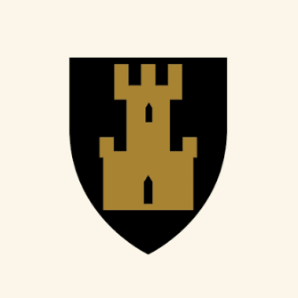

EDUCATION
Bachelor i Kognitiv Vitenskap | Universitetet i Bergen | 2021-2026
Ett år ved bachelorprogram for Datavitenskap (2021):
Python, datasikkerhet, logikk, matematikk.
Overgang til Kognitiv Vitenskap (2022):
Java, lingvistikk, logikk, haskell, intro til kognitiv vitenskap, algoritmer og datastrukturer.
Utvekslingsår i Yamanashi, Japan (2024) før returnering og fullføring av bachelor:
Sinnsfilosofi, kategoriteori, teoretisk algoritmer, multiprogrammering, språk og kognisjon, maskinlæring, dyplæring, forsterkningslæring.
Utveksling | iCLA ved Yamanashi Gakuin Universitet | 2024
Ett år utveksling til Yamanashi, Japan:
Intro til psykologi, psykobiologi, sosial psykologi, kognitiv psykologi, research design, maskinlæring.
Alta VGS | 2016-2020
Studiespesialisering i realfag.

Utveksling | Urawa Gakuin Videregående | 2018
Utvekslingsår til Japan med AFS.
Toneheim musikk folkehøgskole, Piano | 2020
Klassisk piano og litt jazz.
WORK EXPERIENCE
Scandic hotels | Servitør og bartender | 2019-2026
Jobbet sommer 2019, sommer 2021, sommer 2023, vinter 2024, sommer og høst 2025, vår og sommer 2026. Varierte oppgaver innen hotellet. Morgen- og kveldsskifte.
Lærerassistent | Gakori barneskole | 2024, 3 måneder
Vaskeriet ved Aksis | 2023, to uker
Pianolærer | Alta kulturskole | 2021 en uke
LANGUAGES
Norsk
Morsmål.
Engelsk
Flytende.
Japansk
Bestått JLPT N2.